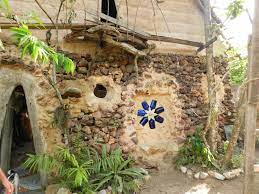
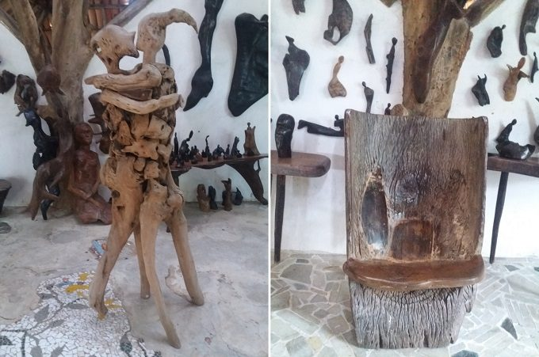
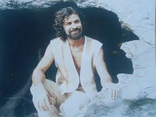
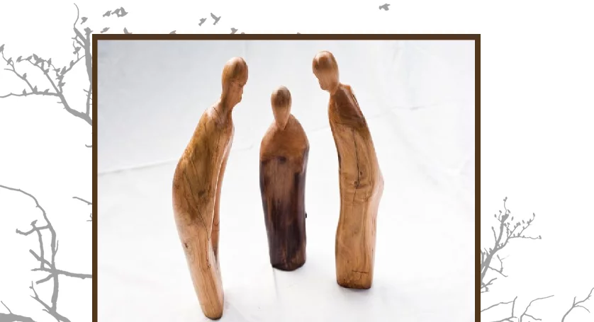

Esse mural é feito para mostrar algumas fotos, novas e antigas da Casa de Pedra
- 
- 
- 
- 
Referência
1.RIBEIRO.Neusso Ribeiro. Disponível em :https://scontent.fvix1-1.fna.fbcdn.net/v/t39.30808-6/300174176_188151006944811_1670398542158961544_n.jpg?stp=dst-jpg_p720x720&_nc_cat=106&ccb=1-7&_nc_sid=e3f864&_nc_ohc=8K2_fc8bnvcAX-NmPL-&_nc_ht=scontent.fvix1-1.fna&oh=00_AT8lawTXwZ1LzauzYp4HOit8tpyVu8tKVOoa9NV0dPjlWw&oe=63362D6A
2.QUASE NÔMADE.Quase Nômade. Disponível em:https://quasenomade.com/wp-content/uploads/2017/11/pedra6-680x451.jpg. Acesso em 26 de set de 2022